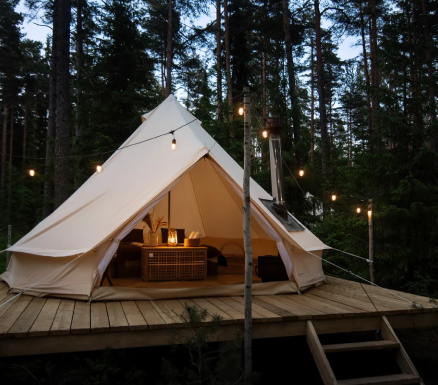

ОСТРОВ БЕЛЫЙ
База отдыха и глэмпинг в Башкирии
База отдыха и глэмпинг
База отдыха и глэмпинг «БЕЛЫЙ БЕРЕГ» расположены на берегу озера Шамсутдин.
Разместившись в любом из наших номеров, вы почувствуете все прелести отдыха на природе, при этом не отказываясь от комфорта гостиничного номера.
Жители крупных городов приезжают в «БЕЛЫЙ БЕРЕГ», где далеко за городом, разворачивается своя жизнь: таинственная, прекрасная и богатая, далекая от шума, суеты и гула.
Мы предусмотрели размещение на любой вкус: деревянные дома «Монокли» с круглыми окнами и глэмпинг — комфортабельные палатки, внутри которых настоящие гостиничные номера, расположенные на берегу озера и на платформе на воде.
Выбирайте то, что нравится вам.
Пн. — Чт.
2 500 ₽ за номер/сутки
Пт. — Вс.
3000 ₽ за номер/сутки
Пн. — Чт.
2 800 ₽ за номер/сутки
Пт. — Вс.
3300 ₽ за номер/сутки
Пн. — Чт.
3 500 ₽ за номер/сутки
Пт. — Вс.
3000 ₽ за номер/сутки
До 13 июля - заезд в 16:00 часов, выезд в 14:00 часов.
С 13 июля до 31 июля - заезд в 14:00 часов, выезд в 12:00 часов.
С 1 августа - заезд в 15:00 часов, выезд в 12:00 часов.
Дом “Монокль”
Пн. — Чт. Пт. — Вс.Глэмпинг
Пн. — Чт. Пт. — Вс.Глэмпинг на воде
Пн. — Чт. Пт. — Вс.2 500 ₽ н./сутки
3 000 ₽ н./сутки
2 800 ₽ н./сутки
3 300 ₽ н./сутки
3 500 ₽ н./сутки
3 000 ₽ н./сутки
Зеркальное озеро Шамсутдин, которое не оставит никого равнодушным к своей красоте.Причал с пирсами и лодками, для водных прогулок. Места для отдыха — гамаки и качели, способные подарить ощущение невесомости. Общественная зона— место, где можно посидеть в компании семьи или друзей и приготовить пищу на мангалах. Мини-магазин, если вы забыли что-то купить — не страшно, все самое необходимое можно приобрести прямо на базе отдыха.
Дома «Монокли» со всеми удобствами: туалет, душевая кабина, электричество и горячая вода. Уютные номера в глэмпинге.В каждой палатке проведено электричество и есть рукомойник. При заезде гостям выдается ключ от индивидуального душа и туалета, который расположен в отдельном сооружении на расстоянии минуты ходьбы от номеров.
Для малышей предусмотрены развлечения, которые могут увлечь их на целый день: домик на дереве, детская площадка, батут, качели и гамаки.
Детская площадка, на которой находится домик на дереве, качели и батуты, порадуют всех малышей. Аренда велосипедов для лесных прогулок. Весельные лодки отлично подойдут для романтичных прогулок по озеру. Рыбалка понравится ценителям ловли рыбы в удовольствие: рыбачьте сами и обучайте этому ремеслу своих детей. Мангалы для приготовления самой вкусной пищи на костре.
Все номера оборудованы мини-кухнями и необходимой посудой для приготовления пищи. У домов «Моноклей» есть индивидуальные мангальные зоны. На территории базы расположена общественная зона, где можно приготовить еду на мангальной площадке.
На территории базы отдыха можно взять в аренду: велосипеды, весельные лодки, рыболовное снаряжение, бадминтон (скоро), казаны